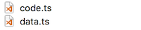
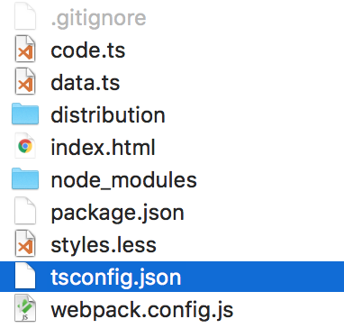
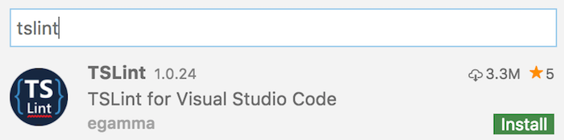
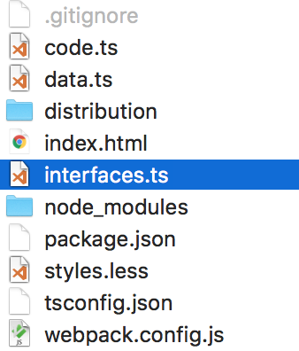
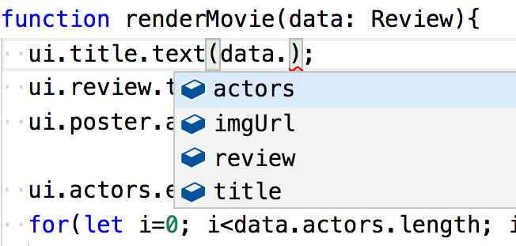
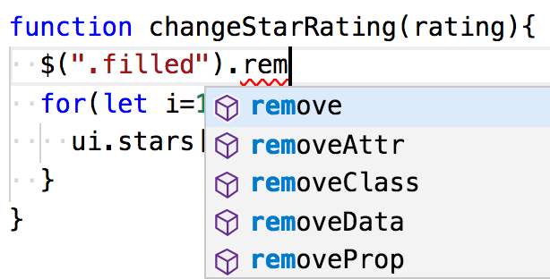
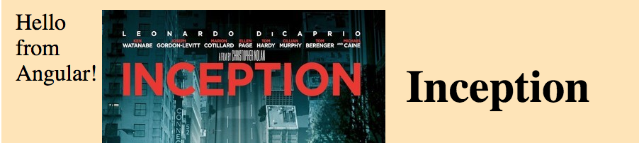
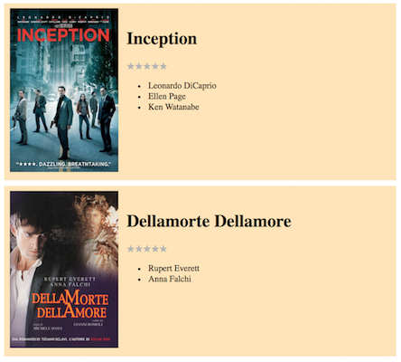

The next level
Upping the anteSections in this chapter
TypeScript
Fooling the devil
Learn about TypeScript
So -

The catchphrase for TypeScript is...
JavaScript that scales
...and that's a pretty good description! TypeScript is regular JavaScript (ES6, to be more precise), but with some useful tools added on top. In mathetical terms this means a superset of JavaScript.
The browsers can't understand TypeScript, however, so we must compile it before we serve it:
Conceptually the same as we did for LESS!
So what does TypeScript add? Many things!
Most importantly types, as the name suggests.
We can add type annotations to variables, parameters and functions:
let name: string = 'foo';
function isAllowedInToTheBar(age: number): boolean {
return age >= 18;
}
Now, if some other code violates these annotations, TypeScript would flag this as a problem. (During compilation, or even earlier, if your editor is TypeScript-aware.)
However, the real power of TypeScript is that it does static analysis of your code. So if we later typed this...
let willHaveFunTonight = isAllowedInToTheBar(16);
...and hovered above willHaveFunTonight, a TypeScript-aware editor would tell you that this is a boolean!
In other words, this example code...
let name: string = 'foo';
...was unnecessarily complex, as this would be enough:
let name = 'foo';
TypeScript sees from the assignment that name is a string, and will treat it as such.
In other words - simply by activating TypeScript we get a lot of power, even if we don't use any type annotations!
Perhaps the most powerful part of TypeScript is that it allows us to create types for object shapes:
type User {
name: string,
age: number
}
Now we can type our objects...
let me: User = { name: "David", age: 37 };
...and TypeScript will ensure compliance:
let you: User = { name: "Bob" }; // angry red squiggly line since we're missing age
Note that types are purely a development artifact, there'll be no trace of them in the generated JS code.
Which means there's no performance or bloat penalty to using them, but we gain in code clarity and bug prevention!
There is a lot more to say about TypeScript. In fact, we have a whole course just about TypeScript!
Exercise - Converting to TypeScript
Goal: Install TypeScript
Specifically, we will:
- aGet dependencies
- bTypeScriptify code files
- cConfigure TypeScript
- dMake Webpack use typescript
- eFix a TS linter
First we need to install..
- TypeScript, which includes the compiler
- TS-loader, which is what allows webpack to read the typescript files and turn them into regular JavaScript
npm install --save-dev typescript ts-loader
Now we need to turn our files into typescript files!
First, simply rename them to .ts!

We also have to use import/export syntax.
In data.ts, instead of doing module.exports, do:
export const movieData = {
// truncated
};
And in code.ts we exchange the require bits to:
import {movieData} from "./data";
import * as $ from "jquery";
For those of you who already used the import/export syntax - note how we must do import * as $ for jQuery instead of just import $.
Next we need to configure TypeScript. Create a new file with the magical name tsconfig.json:

In that file put this content:
{
"compilerOptions": {
"sourceMap": true
}
}
There are of course a lot more options that can go into here, but this will suffice for now!
Time to make WebPack aware of TypeScript by doing some changes to webpack.config.js!
First we need to change the entry from code.js to code.ts since we renamed the file:
entry: './code.ts',
Next we must tell WebPack to care about .ts files, otherwise it'll just ignore them! This is done with a resolve key, like this:
resolve: {
extensions: ['.ts', '.js']
}
Finally, below resolve, we must tell it to use TypeScript to read those files:
module: {
rules: [
// all files with a `.ts` extension will be handled by `ts-loader`
{ test: /\.ts$/, loader: 'ts-loader' }
]
},
After all this, you should be able to do...
npm run bundle
...and it should still work like before!
Final item on the agenda - we must fix the code linting!
ESLint doesn't understand TS, so, start by removing it! That is,
- delete
.eslintrc - delete
.eslintignore - remove it from dependency in package.json
Instead we'll be using TSLint! So go do:
npm install --save-dev tslint
Now create a file called tslint.json and paste in the following:
{
"defaultSeverity": "error",
"extends": [
"tslint:recommended"
],
"jsRules": {},
"rules": {},
"rulesDirectory": []
}
The "extends" : ["tslint:recommended"] part will give us a whole bunch of sane defaults. Remove it if it annoys you. :)
Of course we should add a few rules of our own choosing too!
- See the full list at https://palantir.github.io/tslint/rules/
- Pick a few that you like
- Add them to the
tslint.jsonfile in therulessection
And as before we must make VSC aware of our linter! Find the TSLint extension in the marketplace tab:

After reloading the VSC window you should now get linting in your ts files!
Final order of linting business - we must replace the lintjs script with something using TSLint instead!
"lintts": "tslint -c tslint.json '*.ts'"
If you have deep folders you might need tslint -c tslint.json '**/*.ts' instead.
Final final order of linting business - don't forget to update .circleci/config.yml to use this new command!
So, after all this - what did we actually gain?
So far - nothing!
But now that TypeScript is in place, we can reap the rewards in the next exercise!
You are done when...
- The files are
.tsfiles - Running
npm run bundlegenerates a bundle like before - The app hasn't changed at all, it still runs
If you get stuck, see the TypeScript Start solution.
Exercise - Using TypeScript
Reaping the rewards
Goal: Employ TypeScript power in our code
Here's the plan:
- aUtilize ES6 syntax
- bAdd a type for our review data
- cGet type help for jQuery
Since TypeScript contains the ES6 syntax, perhaps we could use some other neat ES6 feature? For instance, use an arrow function as event handler!
ui.rating.on("click", "span", (e) => {
// truncated
});
For more tips on ES6 stuff, see the ES6 appendix!
We have one implicit class in our app right now - the review data!
That has a certain shape, but inside the code we get no help enforcing the correctness of our usage.
Let's fix that!
I like to add such stuff in a separate interfaces.ts file:

Inside that file we'll create an object type and export it. Here's the one for my review data:
export type Review = {
title: string
imgUrl: string
review: string
actors: string[]
}
Add one that matches your data!
Then we should use that type in data.ts!
import { Review } from "./interfaces";
export const movieData: Review = {
// truncated
};
...and also in code.ts to type the renderMovie parameter:
import { Review } from "./interfaces";
function renderMovie(data: Review){
// truncated
}
Because, having done that we get full intellisense for our custom data:

TypeScript can also help us with intellisense for 3rd party code. Let's fix that for jQuery!
Simply install the official typings for jQuery...
npm install --save-dev @types/jquery
...and register them in tsconfig.json:
{
"compilerOptions": {
"sourceMap": true,
"types": [
"jquery"
]
}
}
Having done that we get full intellisense for jQuery too!

You are done when...
- You're using some ES6 feature
- You get intellisense for movie review data
- You get intellisense for jQuery
If you get stuck, see the TypeScript Next solution.
Intro to AngularJS
Your first JS framework!
Learn about AngularJS
So! Time to get to know AngularJS, a JavaScript framework by Google.
How many JS frameworks are there?
Speaking of many frameworks - can you spot the difference between these two?

Obviously;
- The first is the logo for AngularJS, the framework we're talking about
- The second represents Angular, a spiritual successor to AngularJS but a completely different framework (even though it started on version 2.0.0)
Some more comparisons:
| Angular v1 | Angular v2+ | |
|---|---|---|
| Official name | AngularJS | Angular |
| Homepage | http://angularjs.org | http://angular.io |
| NPM package | angular | @angular |
| Git repo | angular/angular.js | angular/angular |
| version (nov 2017) | 1.6.6 | 5.0.2 |
...isn't this hugely confusing?
Yes. Yes, it is.
Anyhow! Frameworks. They are all about providing convenient infrastructure.
But before we get to how AngularJS does that, let's talk about how to get it up and running!
We start an AngularJS application by creating an app module:
import * as angular from "angular";
let app = angular.module("myawesomeapp", []);
The empty array at the end is for module dependencies, if we had any (3rd party ui components, etc).
We must then mark where in the HTML the app should instantiate. We do this by placing a ng-app "directive" in our HTML, telling AngularJS to connect that element to our app.
This is often done on the body:
<body ng-app="myawesomeapp">
The app itself doesn't do anything until we controllers to it:
app.controller("myawesomecontroller", function($scope){
$scope.message = "Hello world!";
});
Everything we attach to our weird-looking $scope thing will be available for use in the HTML!
We can then connect the controller to an element within the app:
<div ng-controller="myawesomecontroller">
And inside of that, we can access the values on $scope via interpolation:
<p>{{message}}</p>
There is so much more to tell, but what you just saw is the basic pattern of AngularJS!
Exercise - installing AngularJS
Goal: Install AngularJS
In this exercise we'll just install angular and make sure it's working.
We'll let our existing jQuery logic stay for now.
Here's the battle plan:
- ainstall angular
- bcreate minimal app and controller
- chook it into HTML
First we install and download the package:
npm install --save angular
We'll also want to fix the typings! First we install them...
npm install --save-dev @types/angular
...and then we register them in tsconfig.json:
{
"compilerOptions": {
"sourceMap": true,
"types": [
"angular",
"jquery"
]
}
}
Next we create a minimal app and controller. Put this at the top of code.ts:
import * as angular from "angular";
let app = angular.module("reviewApp", []);
app.controller("reviewController", function($scope){
$scope.message = "Hello from Angular!";
});
Finally, let's hook this up to the HTML in index.html!
First, use ng-app to tell AngularJS to start the app in the body:
<body ng-app="reviewApp">
Next we connect the controller to the container div using ng-controller:
<div ng-controller="reviewController" class="container">
Finally, just inside that div, we interpolate the message from the controller just to make sure things work:
{{message}}
If it all works out you should see the message in the rendered app!

You are done when...
- You see the message from AngularJS
- Nothing else changed
If you get stuck, see the Angular Start solution.
More AngularJS
An AngularJS cookbook
Learn about the AngularJS nitty-gritty
Of course, what we just did didn't accomplish anything (except for making our bundle 10x bigger).
Time to start actually using AngularJS!
Here you'll get some useful patterns that we will emply later!
- ainterpolation
- brendering lists
- cconditional class
- dhandling events
- edynamic images
- fhide unhandled templates
You've already seen this, but let's repeat: In the controller we can attach data to the $scope...
app.controller("myawesomecontroller", function($scope){
$scope.greeting = "Hello world!";
});
...which can then be accessed in the template:
<div ng-controller="myawesomecontroller">
<p>{{greeting}}</p>
</div>
AngularJS has an ng-repeat directive to repeat an HTML element for each item in a list. Say we expose a list:
$scope.chores = ["make bed", "take out trash", "do dishes"];
Then in the HTML we can do this:
<ul>
<li ng-repeat="item in chores">{{item}}</li>
</ul>
Here item is just an iteration variable name that we make up, like i in a for loop.
AngularJS has a syntax to conditionally give an element a class. Let's say we have this CSS...
.highlight {
border: 3px solid gold;
}
...and we expose a isHighlighted boolean in the controller:
$scope.isHighlighted = true;
Then in the HTML we have a paragraph that we want to get the .hightlight class when the isHighlighted flag is true. We accomplish that using the ng-class directive:
<p ng-class="{highlight: isHighlighted}">
It has an object-like syntax; the keys are classes that we maybe get, and the values determine if we get that particular key.
AngularJS lets us catch event via event-specific directives. For example we capture click events using ng-click!
There are two parts to this - first we expose a handler in our controller:
$scope.handleClick = function(){
alert("BOOM went the world!");
}
Secondly, in the HTML, we'll call that handler from code written inside ng-click:
<button ng-click="handleClick()">Don't press me</button>
As you can see this is very similar to oldschool onclick!
Let's say we have a dynamic URL for an image that we expose in the controller:
$scope.urlToImage = "https://img.bricklink.com/ItemImage/SL/6086-1.png"
In the HTML we could use normal interpolation in the src attribute:
<img src="{{urlToImage}}"/>
However, if we do, we'll get an ugly 404 as the browser will try to download the url {{urlToImage}}, since it parses the document before AngularJS has had the chance to transform that to the actual data.
The solution is to use the ng-src directive instead:
<img ng-src="{{urlToImage}}"/>
Speaking of that - we'll still see ugly {{message}} stuff flash by elsewhere in our template when the page first shows, before AngularJS has kicked off. The solution is the ng-cloak directive.
First, add this style:
[ng-cloak] {
display: none !important;
}
As you can see, this style will hide all elements with an ng-cloak attribute.
Next, add that attribute to the root of your app:
<body ng-app="myawesomeapp" ng-cloak>
When AngularJS encounters that attribute it will remove it. The end result is that the app will become visible when AngularJS has parsed the template, which prevents the user from seeing the ghastly {{ ... }} stuff!
Exercise - AngularJS Controller
Wrestling the beast
Goal: Simplify our code with AngularJS
Time to finally start using AngularJS for real!
Here's the plan:
- aKick out jQuery
- bLet AngularJS render the data
- cHandle the star clicks with AngularJS
First point of business - we won't need jQuery anymore, so...
- remove all jQuery code from
code.js. Yes, this means all ofrenderMovie,changeStarRatingand the event handler setup! - remove all jQuery references elsewhere in the app (package.json, tsconfig.json, etc)
Now we have to make AngularJS show the data instead!
Begin with exposing the movie data in the controller by attaching it to $scope (or this if you use that syntax).
You could expose the 4 keys one by one, but it is probably easier to expose the entire object:
$scope.movie = movieData;
Having done that, go back to the template and interpolate the data one piece at a time!
- The title and description will just be straightforward interpolation.
- The image url will require you to use the
ng-srcdirective. - The actor list will need the
ng-repeatdirective.
Time to handle the rating selection! Because AngularJS templates are data-driven, we need to stop cheating and actually start track the current rating.
$scope.rating = 0;
Now, with the rating in place, we can dynamically give filled classes to the stars depending on the rating value, using ng-class.
For example, the third star could look like this:
<span ng-class="{filled: rating>=3}">★</span>
Next we expose a handler in which we update that rating:
$scope.changeStarRating = function(newRating){
$scope.rating = newRating;
}
Wait - after we update the rating, don't we have to tell AngularJS to rerender?
That's the beauty of framework magic - no, we don't! AngularJS takes over the responsibility of "triggering renderMovie", so to speak.
Anyhow - with the handler exposed, now use it in ng-click directives on the star elements in the HTML!
You are done when...
- The app works exactly like before
- No
{{ .. }}ever flash by and there are no silly image 404 errors - jQuery has been thrown out
If you get stuck, see the Angular Next solution.
Controller variant
Because there's many ways to skin a cat
Learn about the alternate controller syntax
AngularJS has been around for a long time. So long, in fact, that it has the same problems as the web!
- we realise there are better ways to do certain things
- but we can't change because we want to be backwards compatible
Of course we can get around this through versioning, but AngularJS hasn't always done that to good effect.
One of the things they found a better way for is really fundamental, namely, interpolation. You've seen how we attach values to $scope in the controller:
app.controller("myawesomecontroller", function($scope){
$scope.greeting = "Hello world!";
});
...which can then be accessed in the template:
<div ng-controller="myawesomecontroller">
<p>{{greeting}}</p>
</div>
There is a competing syntax for this - we can define our controller to work with this instead of $scope:
app.controller("myawesomecontroller", function(){
this.message = "Hello world!";
});
We no longer attach data to $scope, but to this instead.
For this alternate syntax we must connect the controller slightly differently by giving it an alias...
<div ng-controller="myawesomecontroller as ctrl">
...and when we interpolate we must access the variables off of the alias:
<p>{{ctrl.message}}</p>
Fine, getting rid of $scope was nice, but isn't this new syntax fiddlier since we have to use an alias?
Yup, it is. But the advantage is that with nested scopes it becomes super clear where the variables come from:
<div ng-controller="myawesomecontroller as ctrl">
<h1>{{ctrl.title}}</h1>
<div ng-controller="innercontroller as ctrl2">
<p>{{ctrl2.content}}</p>
</div>
</div>
Exercise - Controller, take 2
Wrestling the beast again
Goal: Try the other controller syntax
Not much to say beyond the goal text; your mission is to convert your app to the newer controller syntax!
You are done when...
- There are no mentions of
$scopein the code - The app still works
If you get stuck, see the Angular Next Alt solution.
What comes next?
The rest of the story
Learn about what remains to learn in AngularJS
You taken a good bite out of core AngularJS functionality, but there's so much more we haven't covered.
Let's just walk through some things so you know what lies ahead!
You'll likely want to handle routing within your app, to allow the user to use bookmarks and back/forward buttons to navigate your app.
AngularJS allows you to package your controllers + related HTML as reusable components.
We'll take a short peek at that shortly!
There's also a concept called services - this is an abstraction to house...
- app-wide logic
- app-wide state
- backend interaction
- inter-component communication
In a small app you won't need them, but when things grow they are very useful.
Exercise - Exploring AngularJS Component
Putting code in a can
Goal: Understanding the power of components
As mentioned, AngularJS has a component syntax which lets us bundle controllers and their related HTML together.
This is hugely useful, and at the core of more modern frameworks such as React (or the new Angular). So, let's explore it!
In the solution bundle for this exercise you'll find yet another version of the movie app where I've componentalised the review part. This let's me do this:

Your mission is simply to explore my source code and see if you can figure out how it all fits together!
Angular Component solution.
And, if you feel adventurous and have the time, try to employ it in your code!
You are done when...
- You have explored the source code
- You have an idea of how components work